Workshop documents
Documents designed for workshop or classroom participation typically provide information, examples, and prompts with room for participants to respond. The functions described here provide space in a document for written responses.
- For a prompt that requires a written response, the
put_gap()function inserts a blank space in the document. - For a prompt that requires a sketch in a coordinate frame, the
put_axes()function inserts an empty coordinate frame in the output document.
Both functions work by creating and returning a ggplot2 object.
library("docxtools")
put_gap()
This function allows the author of Rmd to docx documents to insert a vertical white space of specified height.
The white space is an empty ggplot2 object. The only assignment is the panel background, made with theme(panel.background = element_rect()).
The usage is put_gap(col = NULL, fill = NULL) to specify the color of the rectangle border and its fill. Defaults are “transparent”.
The dimensions of the gap are determined when it is printed. For example, to create a 0.75 inch gap in an R Markdown output document, we set the dimension in the knitr code chunk header,
```{r fig.height = 0.75}
put_gap()
```produces this output:
With color and fill arguments and an optional width argument in the code chunk header,
```{r fig.height = 0.75, fig.width = 6}
put_gap(col = "black", fill = "gray")
```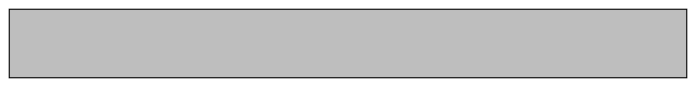
Here’s an image from a Word document where space for written responses was created using put_gap().
knitr::include_graphics("../man/figures/example-docx.png")
#> Error in knitr::include_graphics("../man/figures/example-docx.png"): Cannot find the file(s): "../man/figures/example-docx.png"A gap can also be used to force a page break. Alternatively, Norbert Köhler shows how to insert page breaks using Word Styles, see R Markdown: How to insert page breaks in a MS Word document.
put_axes()
put_axes() creates and prints an empty, 2-dimensional coordinate axes using ggplot2 with no scales, no tick marks, and no axis labels.
Usage is put_axes(quadrant = NULL, col = NULL, size = NULL).
-
quadrant0 for all quadrants; 1, 2, 3, 4 for a single quadrant; or any combination of adjacent quadrants, e.g., 12, 21, 23, 34, etc. The default is 1. -
colis line color. Default is gray60. -
sizeis line size. Default is 0.5. - the hidden scales have magnitude 1.
Quadrants
# all 4 quadrants put_axes(0)
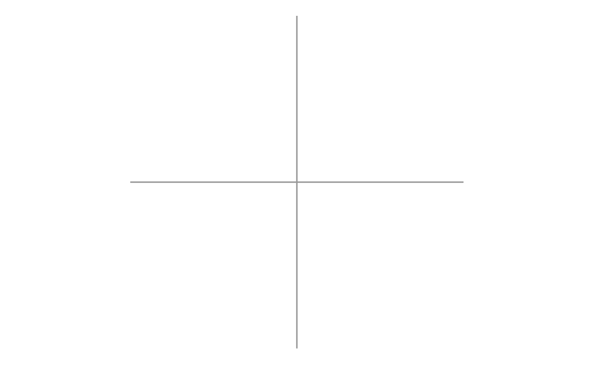
# quadrant 2 put_axes(2)
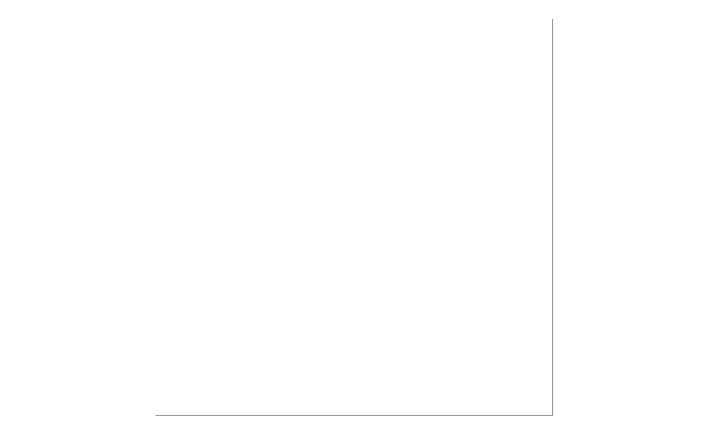
# quadrant 1 put_axes(1, col = "blue", size = 2)
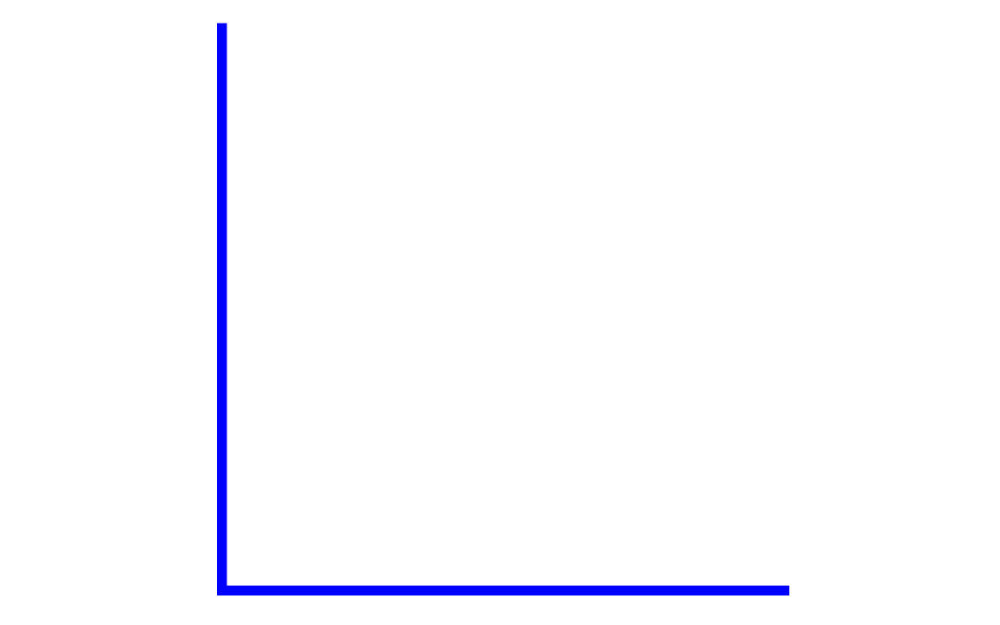
# quadrant 3 put_axes(3)
# quadrant 4 put_axes(4, col = "red", size = 2)
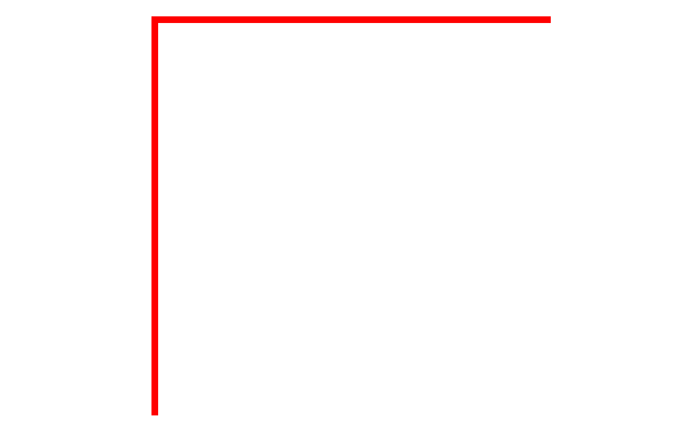
# two adjacent quadrants put_axes(12)
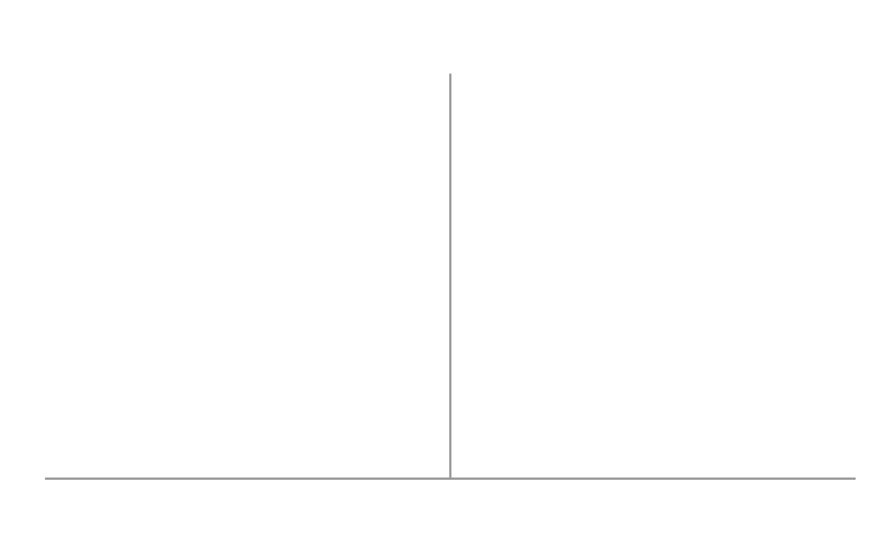
# two adjacent quadrants put_axes(41)
Dimensions
The size of the figure is determined when printed, e.g., using knitr in an R Markdown script, the figure height in inches is set with the fig.height code chunk option.
```{r fig.height = 2}
put_axes()
```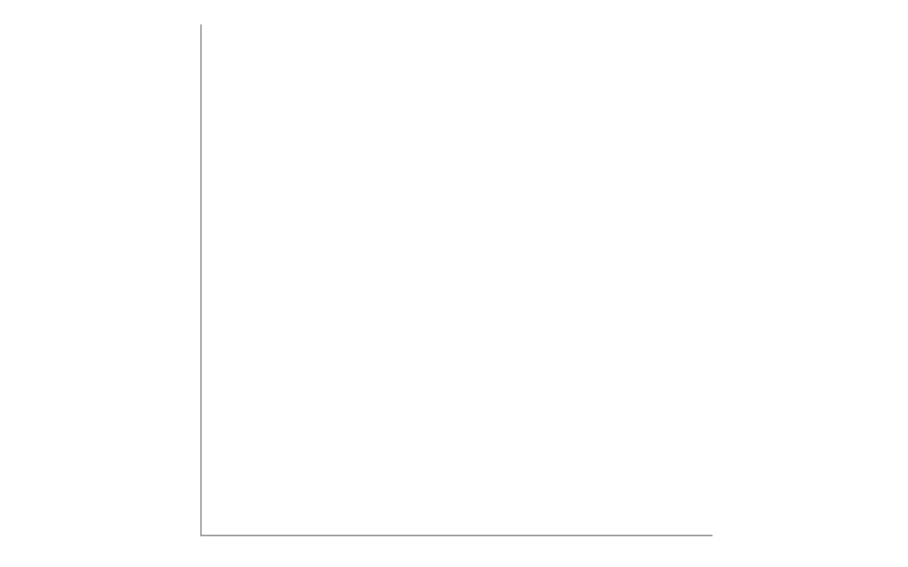
The default aspect ratio is 1, though it can be edited using coord_fixed() from ggplot2.
library(ggplot2) put_axes() + coord_fixed(1 / 2) # ratio of y/x

Annotations
The graph object can be edited using the usual ggplot2 annotations. For example, to place some text in the middle of the graph,
p
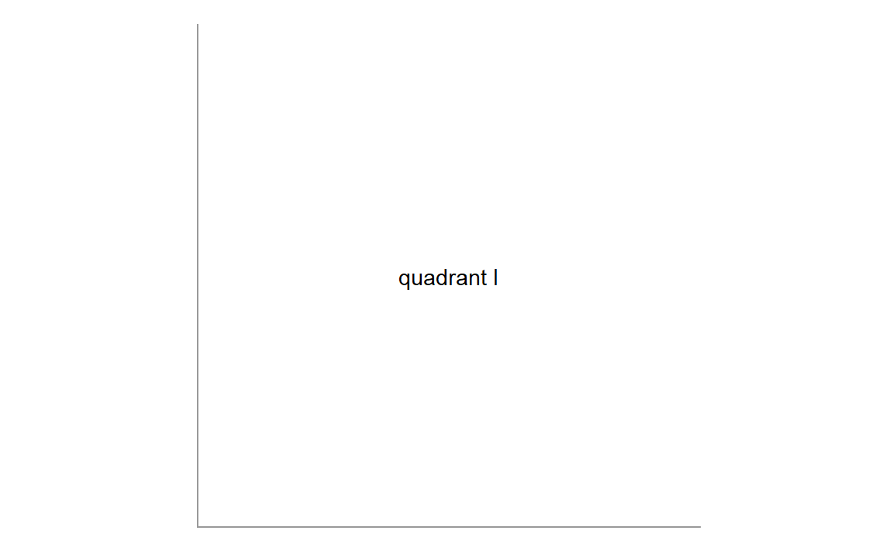
We can add text labels to label the axes using annotate()
p
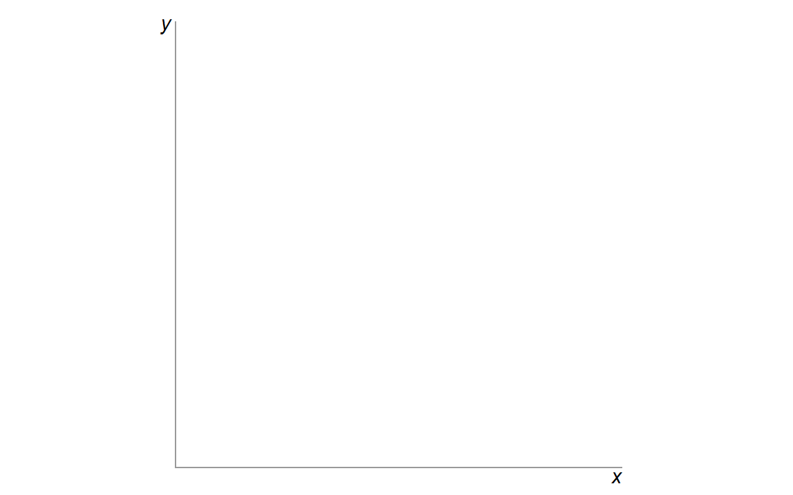
Or we can use the usual labs() after resetting the theme axis.title,
p
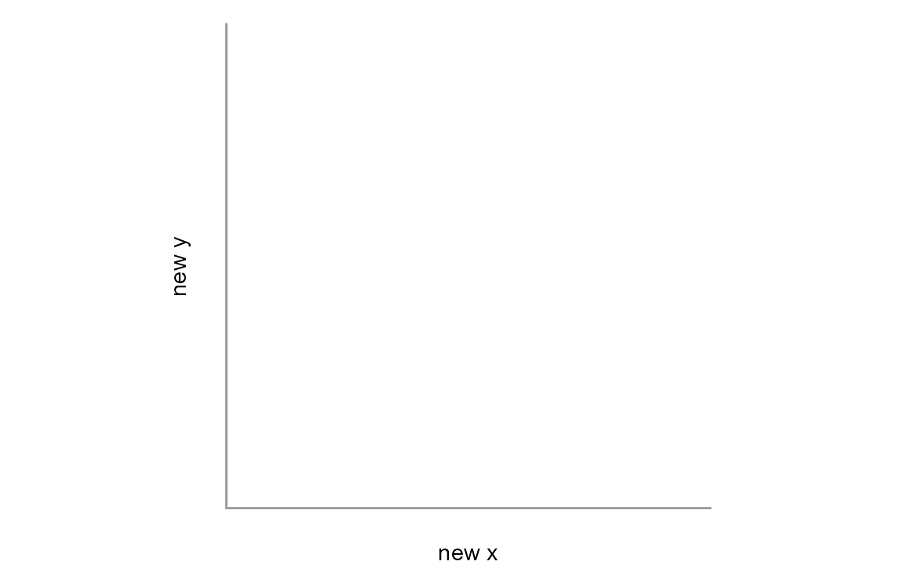
If we use annotate() and the label exceeds the data rectangle, we can make the plot margin larger and override the plot clipping.
p
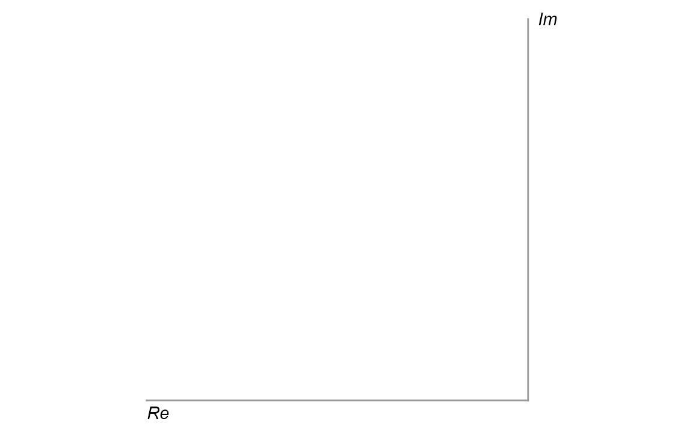